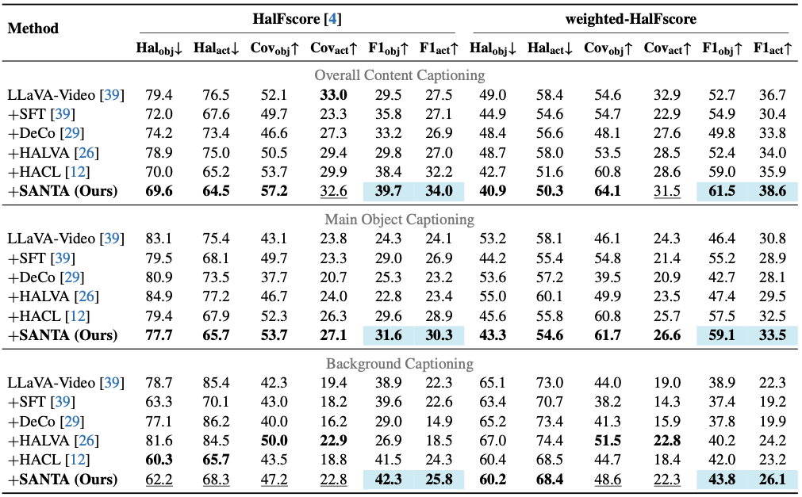

Recent advancement in multimodal LLMs (MLLMs) has demonstrated their remarkable capability to generate descriptive captions for input videos. However, these models suffer from factual inaccuracies in the generated descriptions, causing severe hallucination issues. While prior works have explored alleviating hallucinations for static images, jointly mitigating visual object and temporal action hallucinations for dynamic videos remains a challenging and unsolved task.
To tackle this challenge, we propose a Self-Augmented Contrastive Alignment (SANTA) framework for enabling object and action faithfulness by exempting the spurious correlations and enforcing the emphasis on visual facts. SANTA employs a hallucinative self-augmentation scheme to identify the potential hallucinations that lie in the MLLM and transform the original captions to the contrasted negatives. Furthermore, we develop a tracklet-phrase contrastive alignment to match the regional objects and relation-guided actions with their corresponding visual and temporal phrases. Extensive experiments demonstrate that SANTA outperforms existing methods in alleviating object and action hallucinations, yielding superior performance on the hallucination examination benchmarks.
Input: A dynamic video sequence $v$.
Output: A faithful textual caption $c$ that accurately describes the visual objects and
temporal actions in the video, without hallucinating non-existent elements.
Consider a video showing a person cleaning a floor.
Mitigating hallucinations in video MLLMs presents unique challenges compared to static images:
The core idea of SANTA (Self-Augmented Contrastive Alignment) is to leverage the model's own tendency to hallucinate to improve its faithfulness.
"By identifying what the model is likely to hallucinate and using those hallucinations as negative examples during training, we can teach the model to distinguish between factual visual evidence and spurious language correlations."
SANTA achieves this through two intuitive steps:
The SANTA framework operates during the training phase of the MLLM. It introduces auxiliary contrastive loss functions that run alongside the standard next-token prediction loss. The goal is to pull the representations of visual facts (objects/actions) closer to their correct textual descriptions and push them away from hallucinated descriptions.

The training process consists of three alignment objectives:
Instead of using generic negative samples, we generate hallucinative captions. We ask the frozen MLLM to predict the next token but force it to choose the highest-probability token that is NOT in the ground truth. This creates a caption that looks plausible to the language model but is factually wrong. These become our hard negatives.
We extract visual object tracklets using Grounding-SAM2. We align these visual features with the corresponding object phrases in the text. The negatives include other objects in the batch AND the objects from our generated hallucinated captions.
Actions are more abstract. We use a Perceiver-based Action Squeezer that takes object tracklets and learns to extract "action features" by looking at how objects interact over time. This ensures the model pays attention to the dynamics between objects, not just their static appearance.
During inference, we simply use the trained MLLM to generate captions. Because the model was trained with SANTA, its internal representations are now more robust against language priors and more grounded in visual evidence. No extra decoding steps or external models are needed at inference time, keeping it fast.
Training Data: We use MiraData, a large-scale video dataset with high-quality, structured captions (42k videos, avg 72s duration).
Evaluation Benchmarks:
Metrics: We use standard metrics like FactVC-F1 and a proposed Weighted-HalFscore (an improvement over HalFscore that handles synonyms and token importance better).
SANTA significantly outperforms baselines in reducing both object and action hallucinations.


Visualizing the difference between baseline and SANTA. In the example below, the baseline hallucinates a "broom" and "sweeping", while SANTA correctly identifies the "mop" and "mopping".
Figure 4 from paper: Qualitative comparison on FactVC.
We visualized the feature space of the MLLM before and after SANTA training.
Before SANTA: There is a significant overlap between the representations of ground-truth
captions and hallucinated captions. The model struggles to distinguish fact from fiction.
After SANTA: The features are clearly separated. The model has learned a distinct
boundary between faithful descriptions and hallucinations.
We presented SANTA, a novel framework to mitigate object and action hallucinations in Multimodal LLMs. By leveraging Self-Augmented Contrastive Alignment, we enable models to:
SANTA offers a robust solution for deploying MLLMs in high-stakes real-world applications where faithfulness is paramount.
@article{SANTA2026,
title={Mitigating Object and Action Hallucinations in Multimodal LLMs via Self-Augmented Contrastive Alignment},
author={Anonymous Authors},
journal={WACV Algorithms Track},
year={2026}
}